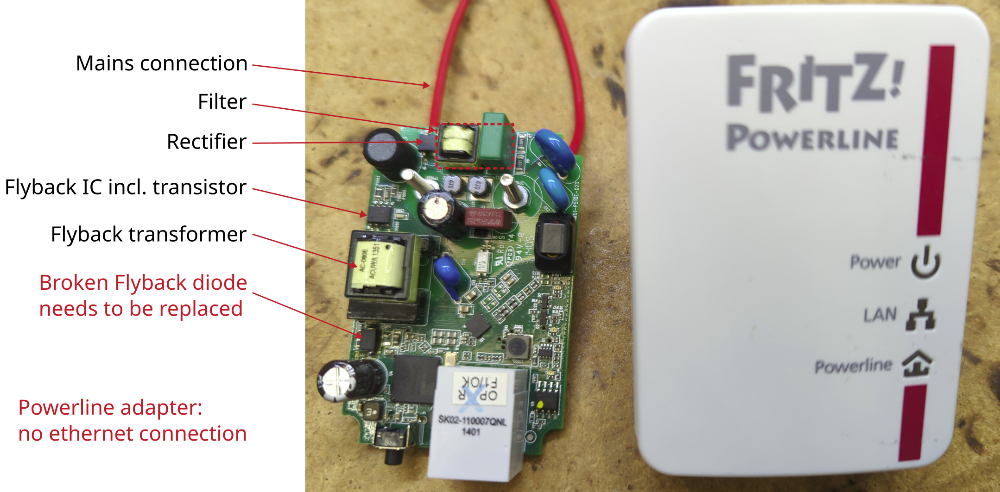

Radio PHILIPS

Manufacturer: PHILIPS
Type: AZ382/12
Description of failure
One speaker fails sporadically.
Failure investigation
If you touch the selector switch (CD - radio - USB), the sound comes or goes off.
This is usually due to a defective switch or the solder connections. As the solder connections can be re-soldered without spare parts, this is tried first. In this case, the problem is solved and there is no longer a loose contact on the switch.
Note: When resoldering solder connections, remove the old solder first, then add new solder.